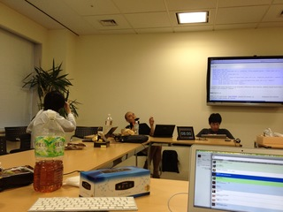

Ruby 2.0.0 リリースを振り返って
書いた人：遠藤侑介 (@mametter)
はじめに
こんにちは、遠藤と言います。るびまに記事を書くのは多分初めてです。
めでたく、Ruby 2.0.0 がリリースされました。
筆者はリリースマネージャとして 2.0.0 のリリースに携わったことになっています。といっても、実作業はほとんど他のコミッタの人たちによるもので、実態としては「リリースアナウンス文作家」という感じです。
本稿では 2.0.0 のリリースまでの道のりについて、簡単に振り返ってみたいと思います。筆者の記憶で書いているので間違いはご容赦を。
2010 年夏: Ruby 2.0 の始まり
現在の 2.0 が公の場で言及されたのは、筆者の知る限りでは RubyKaigi 2010 の開発者会議が最初です。
当時は 1.9.2 がリリースされた直後でした。2.0 については、漠然と「classbox とキーワード引数が欲しい」という話がされただけで、具体的な議論がなされることはありませんでした。
しかし、matz から「2.0 は 1.9 と 100% 互換」というスローガンが出されたことは特筆に値するでしょう。このスローガンがなければ、新機能についての議論は指針なく発散し放題となり、2.0 はあと 10 年くらいリリースされなかったと思います。
しかし、RubyKaigi 2010 の後の 1 年間は 1.9.3 の開発に費やされ、特に 2.0 の話が進捗することはありませんでした。
2011 年秋: 2.0 の本格始動？
1.9.3 のリリースが近づいた 2011 年 10 月上旬、ささださんから「2.0 の仕様を決めよう」という話が出ました ([ruby-core:39824])1。これに対し筆者が「2.0 に必須の機能と入れたい機能を区別しよう」と提案しました ([ruby-core:39836])。そして matz から「refinement とキーワード引数を必須とする」という表明がなされました ([ruby-core:39837])。
そして激動の 2011 年 10 月 18 日。筆者がキーワード引数を試験的に実装し、「trunk2 にコミットしよう」と持ちかけました ([ruby-dev:44602])。 この機能は実のところ大した機能ではないのですが、一応構文拡張になるので、これをコミットするには 1.9 系列と trunk を分ける必要がありました。 さらに同日、成瀬さんから次にリリースするバージョンを 2.0 にしようという提案がなされました ([ruby-dev:44604])。 これらをきっかけに話が一気に進み、その当日中に matz が trunk のバージョン番号を 1.9.4 から 2.0.0 に変更するコミットをしました (r33483)。
- version.h (RUBY_RELEASE_DATE): finally declare start of 2.0 work!
また、このどさくさの中で、筆者の 2.0 リリースマネージャへの立候補が承認されました ([ruby-dev:44672])。matz からの祝福にみちた承認コメントを引用しておきます。
まつもと ゆきひろです
まだ2.0はリリースマネージャが必要なレベルになってないと思いますが、遠藤さんが立候補しておられることに反対する理由もありません。どうぞ。
そんなことより、個別の機能を開発しようよ。
そしてリリーススケジュールが告知されました ([ruby-dev:44691])。
- 2012/08/24: big feature freeze (大まかな機能提案締切り)
- 2012/10/24: feature freeze (機能提案締切り)
- 2013/02/24: 2.0.0 リリース (Ruby 生誕 20 周年)
これで 2.0 に向けた歩みが本格的に始まりました……と言いたいところですが、どうも人間は締切りが近づくまで (or 過ぎるまで) 何もしないようで、この後半年くらいは特に大きな動きはなかったと記憶しています3。もっと直前に締切りを設定しても大差ないんじゃないか、とか思いました。この教訓は後に生きて (？) 来ます。
2012 年春〜夏: 機能提案判定会祭り
- :

- 
さて、そろそろ機能提案締切りが見え始めた時期、2.0 の機能提案を判定していく会議を企画しました ([ruby-dev:45708])。 機能提案者に提案内容を紹介する 1 枚スライドを作って送ってもらい、会議当日はそのスライドを順に眺めていく、というものでした。
2012 年 7 月 21 日に matz を中心に採否判定会を開催し、集まった 30 件強のスライドを一件 5 分程度で採択・不採択・コメントつき保留、とばしばし決めていきました。 (@hsbt さん・paperboy&co. さんより会議室をご提供いただきました。ありがとうございます。)
この会議の成果として採択された機能提案には以下のようなものがあります。
- const_get(“Foo::Bar”) と書けるようになった [#5690]
- シンボルの配列のリテラル %i(foo bar baz) [#4985]
- デフォルトのソースコードエンコーディングが UTF-8 になった [#6679]
- ソースのあるディレクトリを返す Kernel#dir [#3346]
- #chars や #lines が Array を返すようになった [#6670]
この企画はわりと実りがあったと自画自賛しているのですが、企画者 (筆者) の準備・後始末がなかなか大変だったので、その後しばらく燃え尽き症候群でした。加えて他の非常に重要なミッション (夏のプロシンでの発表と IOCCC 参加) で忙しかったこともあり、8 月の「大まかな機能提案締切り」で特にアクションを起こせなかったことは反省点です。この辺はボランタリベースの問題点ですよね…… (他人事のように)。
余談ですが、このころリリース週記なるものを書き始めて見ましたが、これも 3 週坊主くらいになりました。
2012 年秋 〜 現在: 機能提案締切りから preview/rc リリース
このままじゃいかん！と奮い立ち4、2012 年 10 月 24 日に突如「予定通り」の機能提案締切りを宣言しました。こんなひどい宣言みたことない。ただ、スケジュール決定後の半年間の空白の教訓から、ここで延期したところで成果が大きく変わることはないだろうという予想はありました。はい、もちろん言い訳です。
続いて 2012 年 11 月 2 日に、その時点の trunk をパッケージ化した 2.0.0-preview1 をリリースしました ([ruby-dev:46348])。この時、リリーススケジュールを詳細化しました。
- 12 月上旬: 2.0.0-preview2
- クリスマスごろ: code freeze
- 正月過ぎたくらい: 2.0.0-rc1
- 2 月上旬: 2.0.0-rc2
- 2/24: 2.0.0-p0
実はこのスケジュールにはひどい問題点があります。わかりますでしょうか。
答えは “code freeze” (新機能の実装締切り) と rc1 まで 1 週間強しかないことです。コミットされたばかりの新機能が “release candidate” (問題なければそのままリリースパッケージとなる候補版) と呼べるほど安定しているわけがないのに……。バグチケットの処理をする時間も全然ない……。 結局、rc1 は残念ながら文字通りの release candidate の品質には至らず、その後も通常レベルのバグ修正を許容せざるを得ませんでした。これも反省点。
また、さらなる反省点として、rc1 の前後にまた別のミッション (後の「余談」参照) で忙しく、バグチケットの面倒をみる暇が全然とれませんでした。すみません。なお、この作業はいろんな人が代わりにやってくれました（特にささださん、Eric Hodel 、yhara さんが印象深いです）。ありがとうありがとう。
まあこんな風に反省点だらけですが、スケジュールを予定通りに進めることだけは努めたつもりです。なので筆者の 2.0 に対する主な貢献は、リリースアナウンス文の作文です。すみません。
2.0 の今後
2.0.0 のメンテナンスについて
正直、筆者は精緻な作業を継続的にやっていくのはあんまり得意でないです。そこで、2.0.0 メンテナに @nagachika さんを推薦し、ご快諾頂きました。
@nagachika さんは Ruby trunk の全コミットを追いつづける日記 ruby-trunk-changes をもう何年も続けてらっしゃる方で、その継続力は明らかにコミッタ随一です。
2.0.0 の次は？
今年のクリスマス頃に 2.1.0 のリリースを目指します。5
ごく最近 (2013 年 2 月 15 日) 決まったことなので、具体的な内容はまだ何も決まっていません。なので以下は筆者の予想です。 まず、refinements がまだ「実験的機能」という位置づけなので、2.0.0 の中で徐々に実践経験を詰み、改良されていくと思います。 また、TracePoint など debugger 回りの API も整備されていくと思います。 さらに、今回入った新機能も、実践を経てさらにブラッシュアップされていくことでしょう。
特に反対がなければ、筆者がリリースマネージャを続けたいと思っています。 (「お前のようなやつにリリースマネージャは任せておけん！」という声が上がればお譲りしたいと思っています。)
おわりに
執筆時点では全然終わっていないので締めるのは難しいのですが。 それどころか、ここに来て rubygems.org のクラック事件が起きたり、脆弱性報告が相次いだりして、2.0.0 のリリースには何やら暗雲立ちこめておりますが。 この文章、ちゃんとリリースが済んだ後に書きたかったな。
とにかく、この文章が無事 2/24 に皆さんの目に入っていることを願います。 また、だらしないリリースマネージャに怒ることもなく、Ruby 2.0.0 に貢献してくれたすべての方々に感謝いたします。
余談 (宣伝)
リリース時期に何が忙しかったかというと、まあ普通に本業も忙しかったんですが、ある本の翻訳をしていて余暇の大半を吸い取られてました。
Benjamin C. Pierce の “Types and Programming Languages” (通称 TAPL) という本で、プログラミング言語の「型」の教科書とされる本です。「型」とは、Ruby にはないアレのことです。
3 月にオーム社から「型システム入門 プログラミング言語と型の理論」というタイトルで発売されますので、よかったらお買い上げください。
Ruby の型なしの良さを語るには、この本の内容くらいは抑えとくべきですよ (煽り)。
筆者について
遠藤侑介。 Ruby コミッタ (アカウントは mame)。Ruby のテストカバレッジをあげたり、1.9.2 のリリースマネージャ補佐をやったり、2.0.0 のリリースマネージャをやったり。 超絶技巧プログラミングを提唱し、実践している。
-
笹田注：RubyConf2011 で 2.0 を出そうぜ、って話はしていたのです [[ruby-core:39810]]。 ↩
-
開発最新版のリポジトリのこと。 ↩
-
笹田注：大きな動きでもなかったのですが、この間 3/11, 3/18, 3/28, 7/14 とローカルで集まれる人だけ集まって、開発会議をしていました。主に細かい仕様の検討です。結構、細かい仕様検討が多かったもので、この密度で開発を進めたのは初めてだったんじゃないかなぁ。 ↩
-
妻に「だらしない」と怒られたのがきっかけ。 ↩
-
2013 年 02 月 23 日の開発者会議にて、この件は保留となりました。導入を目指す機能を同定してからスケジュールを切ろうということに。 ↩